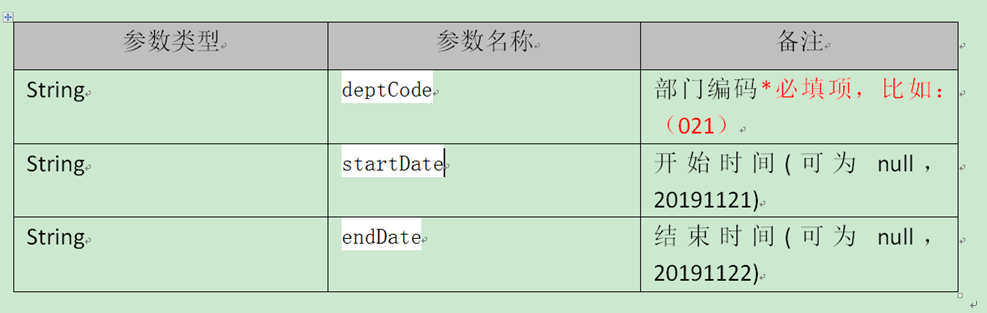

由于当前C++项目需要使用ajax库去post调用ashx接口,接口地址如下所示:
需要传递的参数如下:

然后发现qml比较好调用ajax.js库,所以本章通过C++界面去获取qml方法来实现调用ashx接口(以一个C++界面demo程序为例)
1.抓post数据
通过网页获取到的post数据如下所示:
所以查询20191121~20191122期间时则填入内容: "deptCode=021&startDate=20191121&endDate=20191122"
2.导入ajax.js库
ajax.js文件如下所示:
// GET
function get(url, success, failure)
{
var xhr = new XMLHttpRequest;
xhr.open("GET", url);
xhr.onreadystatechange = function() {
handleResponse(xhr, success, failure);
}
xhr.send();
}
// POST
function post(url, arg, success, failure)
{
var xhr = new XMLHttpRequest;
xhr.open("POST", url);
xhr.setRequestHeader("Content-Length", arg.length);
xhr.setRequestHeader("Content-Type", "application/x-www-form-urlencoded;"); //用POST的时候一定要有这句
xhr.onreadystatechange = function() {
handleResponse(xhr, success, failure);
}
xhr.send(arg);
}
// 处理返回值
function handleResponse(xhr, success, failure){
if (xhr.readyState == XMLHttpRequest.DONE) {
if (xhr.status == 200){
if (success != null && success != undefined)
{
var result = xhr.responseText;
try{
success(result, JSON.parse(result));
}catch(e){
success(result, {});
}
}
}
else{
if (failure != null && failure != undefined)
failure(xhr.responseText, xhr.status);
}
}
}3.写main.qml
import QtQuick 2.3
import QtQuick.Window 2.2
import "ajax.js" as Ajax
Item {
function getWrenchTools(deptCode,startDate,endDate) {
console.log("Got message:", deptCode,startDate,endDate) //打印参数数据
Ajax.post("http://10.194.102.253/WLPTService/Pages/Tools/GetNLToolsByDeptCode.ashx","deptCode="+deptCode+"&startDate="+startDate+"&endDate="+endDate+"",
Widget.invokeFunc);
}这里表示定义一个getWrenchTools()方法,当post成功并返回数据时,则调用Widget.invokeFunc()回调函数(Widget: 该qml对应的C++类,后面会讲怎么捆绑的)
4.widget界面如下
然后写widget.h
#ifndef WIDGET_H
#define WIDGET_H
#include <QWidget>
#include <QString>
#include <QDebug>
#include <QTimer>
#include <QQmlApplicationEngine>
#include <QQmlComponent>
namespace Ui {
class widget;
}
class widget : public QWidget
{
Q_OBJECT
QQmlApplicationEngine engine;
QObject *engineObject; //指向运行的qml对象
public:
explicit widget(QWidget *parent = 0);
~widget();
private:
Ui::widget *ui;
public:
Q_INVOKABLE void invokeFunc(QVariant data1,QVariant data2);
private slots:
void on_pushButton_clicked();
};
#endif // WIDGET_H写widget.cpp
#include "widget.h"
#include "ui_widget.h"
#include <QTimer>
#include <QQmlContext>
widget::widget(QWidget *parent) :
QWidget(parent),
ui(new Ui::widget)
{
ui->setupUi(this);
engine.rootContext()->setContextProperty("Widget",this);
//将QML中的Widget变量指向为当前类.从而使QML和widget类连接起来
engineObject = QQmlComponent(&engine, "qrc:/main.qml").create(); //创建qml并获取运行中的qml对象
}
widget::~widget()
{
delete ui;
}
void widget::invokeFunc(QVariant data1,QVariant data2)
{
ui->plainTextEdit->setPlainText(data1.toString());
}
void widget::on_pushButton_clicked()
{
QVariant depatment= "021";
QVariant start= ui->start->text();
QVariant end = ui->end->text(); //"结束日期"
QMetaObject::invokeMethod(engineObject, "getWrenchTools",Q_ARG(QVariant, depatment)\
,Q_ARG(QVariant, start),Q_ARG(QVariant, end));
}将QML中的Widget变量指向为当前类.从而使QML和widget类连接起来, 然后main.qml如果post成功则调用当前类的invokeFunc(QVariant data1,QVariant data2)方法,从而实现数据返回.由于engineObject指向运行中的qml对象,然后我们通过invokeMethod()就可以方便的请求调用qml对象中的getWrenchTools()函数.从而实现post请求
点击同步后,效果如下所示(然后可以参考50.Qt-QJsonDocument读写json来提取数据):